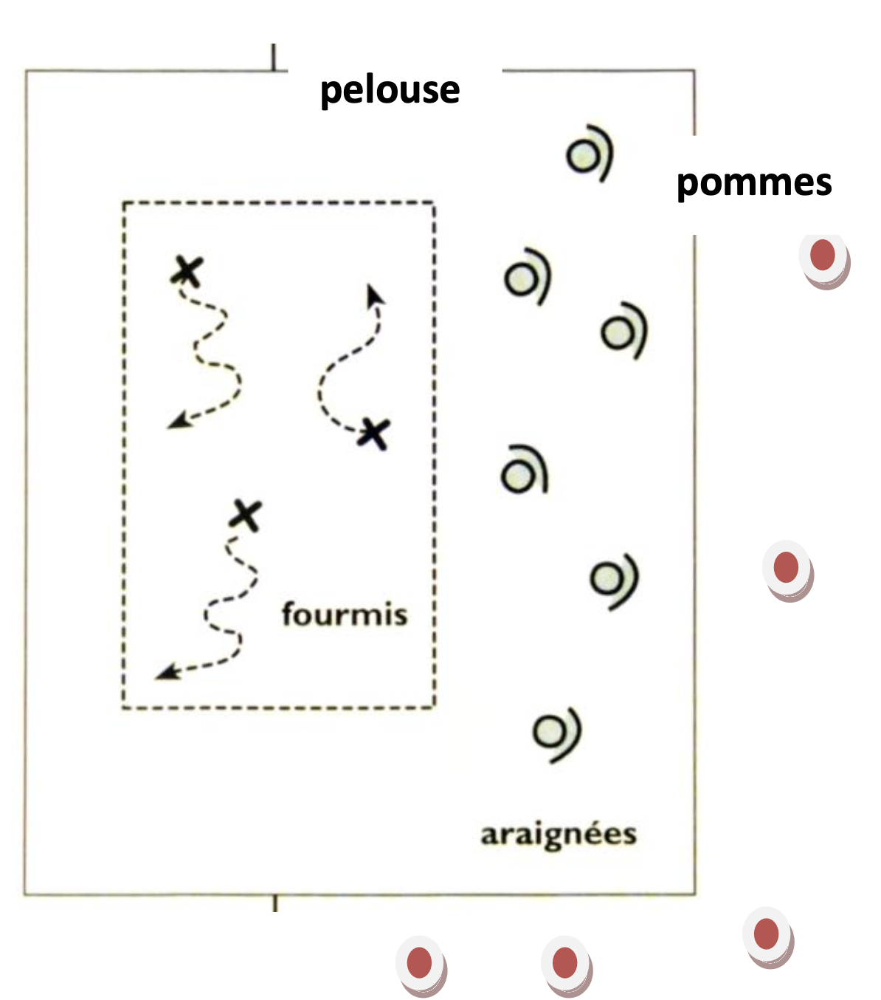

Objectif d'apprentissage
Renforcer la construction de la notion d'espace et d'opposition. S'organiser collectivement pour défendre son terrain.
But
Les araignées doivent empêcher les fourmis de se promener sur la pelouse.
Les fourmis tentent d'aller manger les pommes tombées au sol.
Critères de réussite
- Les araignées ont attrapé toutes les fourmis.
- Des fourmis ont réussi à rejoindre les pommes.
Règles
- Au signal, les fourmis sortent pour tenter d'aller manger les pommes réparties sur deux côtés.
- Les araignées les interceptent en les attrapant et en les maintenant.
Organisation
Aire de jeu de 4m x 4m, un tapis (fourmilière) de 2m x 1m. 3 fourmis pour 6 araignées. Durée du jeu : 45 secondes.
Modalités d'exécution
- Les déplacements s'effectuent debout.
- Le maintien des fourmis par les araignées se fait à bras le corps debout.
Évolutions
- Augmenter la taille de l'espace de jeu.
- Réduire le déséquilibre numérique en augmentant le nombre de fourmis ou en réduisant le nombre d'araignées.
- Répartir les pommes sur tous les côtés de la pelouse.